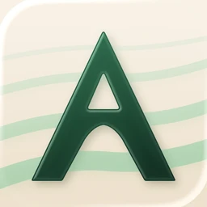
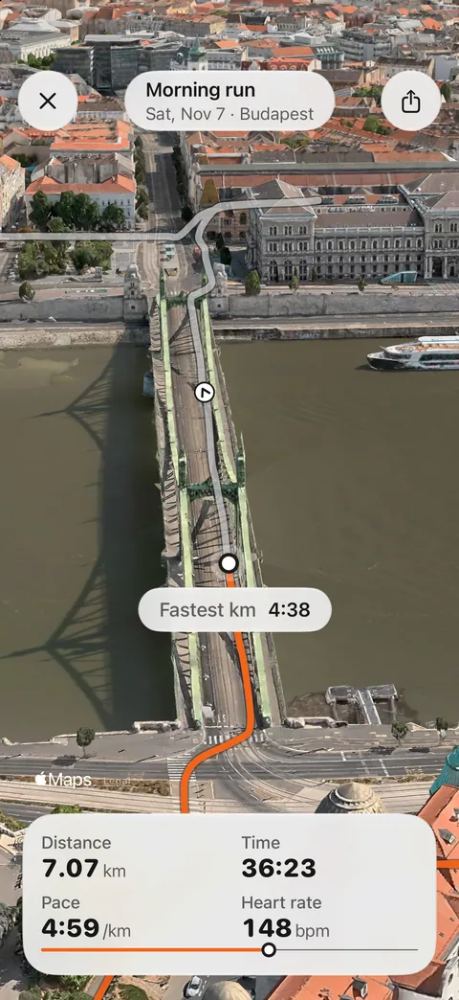
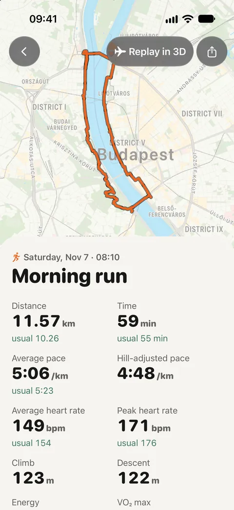
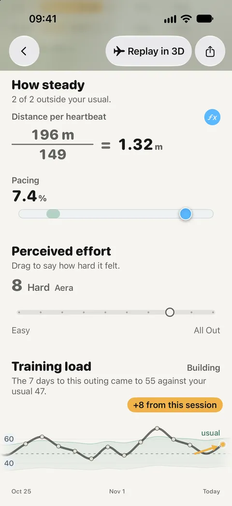
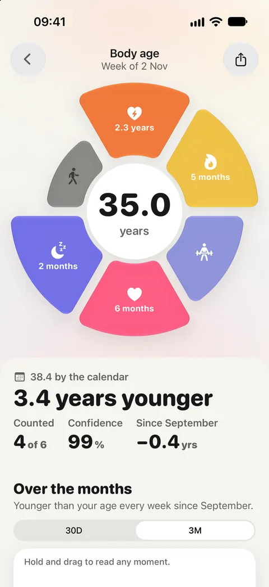
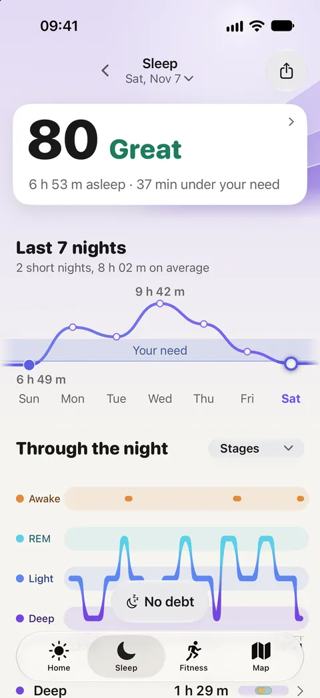
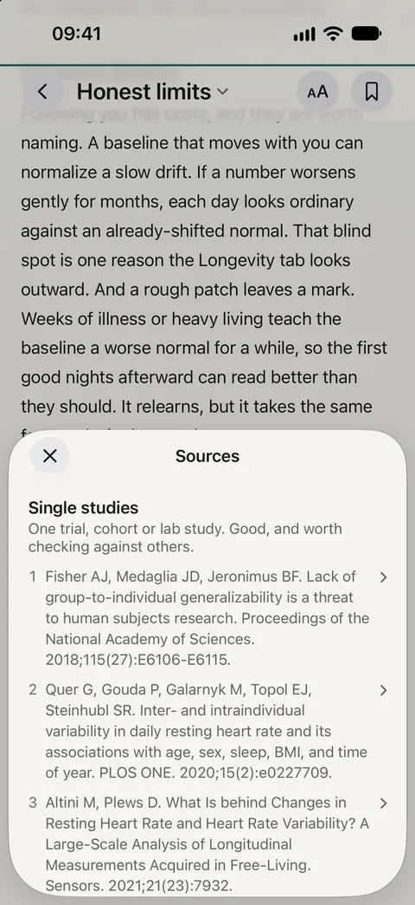
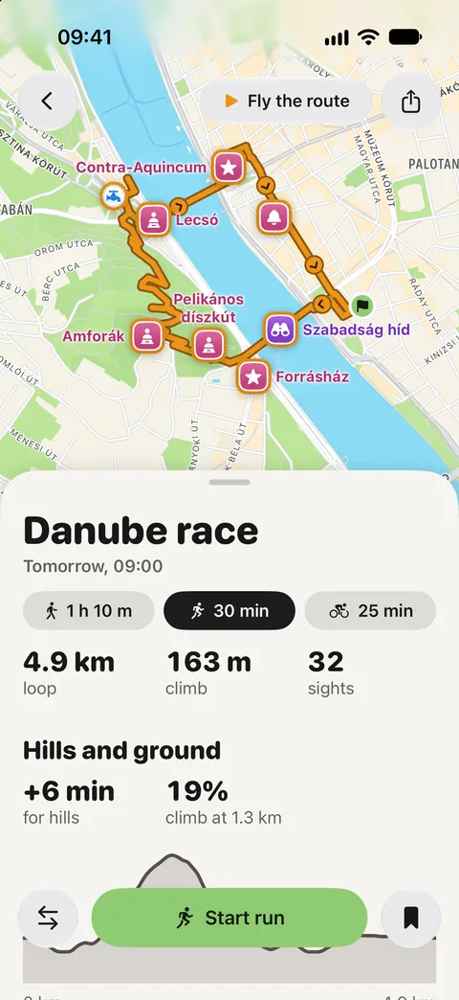
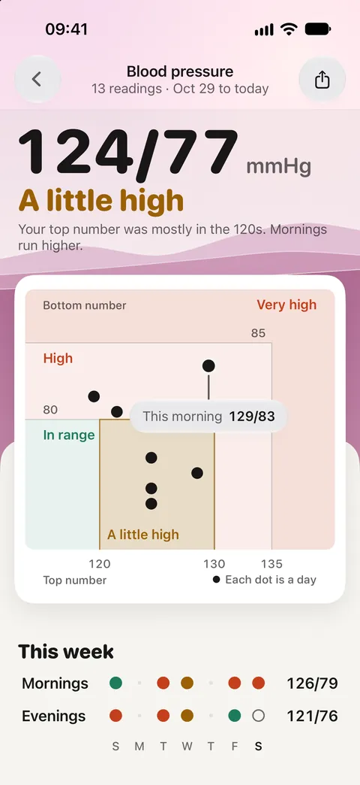

Replay your run. Understand your body.
Everything you need is on this page: the facts, a short and a long description, the icon and screenshots. Use any of it without asking. For anything else, write to the person who makes the app.
Fact sheet
| Name | Aera: Biological Age & HRV |
|---|---|
| What it is | An iPhone and Apple Watch app that replays your runs in 3D over the real ground and reads your nights, heart, effort and progress against your own usual range, from Apple Health. |
| Made by | Gergő Varga, an independent developer in Hungary. One person, no company behind it. |
| Platforms | iPhone (iOS 26 or later) and Apple Watch, with home screen widgets |
| Released | First version 21 April 2026. Version 4.0, November 2026. |
| Price | Free to download and use. Premium is optional, with local prices on the App Store. |
| Free | Your scores every day with their last 30 days (recovery, stress, strain, sleep); body age; a route planner on real paths with turn-by-turn directions on iPhone and Apple Watch and five saved routes; every workout read and every personal best; the 3D replay of any workout with a GPS route from the last seven days; the last 30 days of every export. |
| Premium | Your whole history; body age month by month; the 3D replay of older workouts, as a video to share, and of a route before you go; more than five saved routes; the report for yourself and the longer reports for your doctor. |
| Privacy | No account and no sign-in. Health numbers are worked out and kept on the iPhone. Usage counts stay off until the user turns them on (in the UK and Switzerland, until the user turns them off), and neither they nor crash reports include health values. |
| Languages | English, Hungarian, German, Spanish and French in full; Italian, Japanese, Portuguese and Traditional Chinese in part. |
| Field Guide | Every number in the app opens a short article on how it was worked out, the research behind it and where it stops being reliable. Each article lists its sources. |
| Ratings | 5.0 from 8 ratings on the Hungarian App Store and 5.0 from 1 on the Canadian one. No ratings yet in the US, UK or Germany. (Checked 9 November 2026.) |
| Category | Health & Fitness. Not a medical device; watch measurements such as sleep stages are estimates. |
| Links | App Store · aerahealth.app · Learn |
Descriptions
Copy them as they are or cut them down. They are written to be accurate, so please keep the limits in if you shorten them.
One line
Replay your run. Understand your body.
About 50 words
Aera is an iPhone and Apple Watch app that replays your runs in 3D over the real ground, with pace, heart rate and climb, and reads your sleep, heart and training against your own usual, not a population average. Every number opens a short note on how it was worked out.
About 150 words
Aera is an iPhone and Apple Watch app for people who run with a watch. It replays a run as a short film over the real ground, with pace, heart rate, climb and distance live on screen. Runs recorded on Apple Watch or iPhone carry their GPS route; Garmin, Polar and COROS runs replay once their file is imported.
It reads Apple Health and compares your nights, resting heart rate, heart rate variability, effort and progress with your own usual range, and says so while it is still learning. It estimates a body age beside your calendar age, draws loops on real paths from where you stand, and guides you turn by turn on iPhone and Apple Watch. Every number opens a short article on how it was worked out and where it stops being reliable.
There is no account, and health numbers are worked out and kept on the iPhone. Aera is free, with an optional Premium. It is made by one person, Gergő Varga, in Hungary.
App icon

1024 × 1024 PNG, square. iOS rounds the corners; please don't add a frame or change the colours.
Download iconiPhone screenshots
Captured from version 4.0 on 7 November 2026. Full size is 1206 × 2622. Tap any image to download it.

The run, replayed in 3D
A run, next to your usual
A number with its working
Body age, each signal shown
Last night against your need
An article, with limits and sources
A route before you run it
Blood pressure, for your doctor
The screens show a demo profile, not a real person's health data.
Apple Watch
Who makes it
Aera is made by Gergő Varga, on his own, in Hungary. He started it in February 2026, and it has been on the App Store since April 2026, with every number in the app tied to a short article that names its research and its limits.
The app says it plainly in its own settings: “Aera is built by one person. Your message reaches its creator directly.” The same goes for press. Interviews, review access and questions about how a score works all go to one inbox.
Write to hello@aerahealth.app Or scan with your iPhone
Or scan with your iPhone